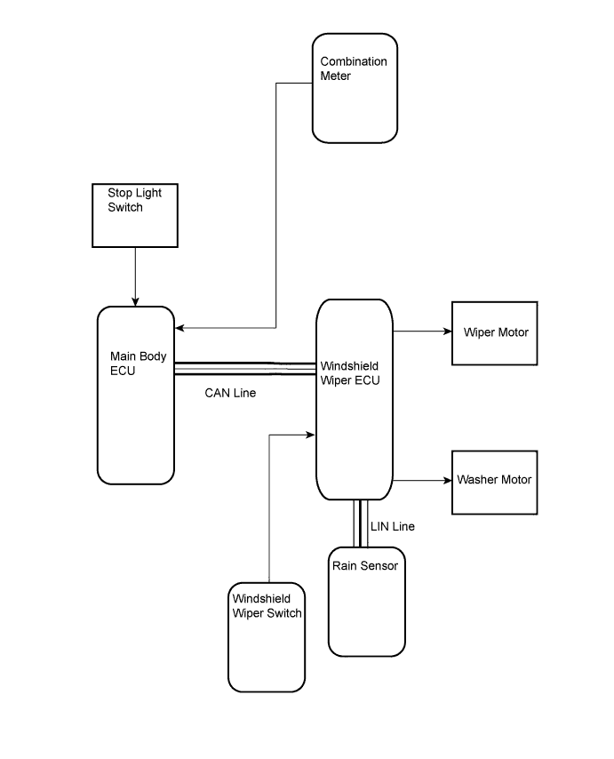

WIPER AND WASHER SYSTEM (w/ Rain Sensor) > SYSTEM DIAGRAM |

| Transmitter | Receiving | Signal | Line |
| Rain Sensor | Windshield Wiper ECU |
| LIN |
| Combination Meter | Main Body ECU | Vehicle speed signal | Direct Line |
| Windshield Wiper ECU | Rain Sensor | Wiper and washer switch signal | LIN |